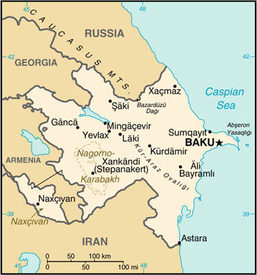

|
Azerbaijan | |
| Introduction Geography People Government Economy Communications Transportation Military Transnational Issues | ||
|  | ||
| Azerbaijan | Introduction | Top of Page |
| Background: | Azerbaijan - a nation of Turkic Muslims - has been an independent republic since the collapse of the Soviet Union in 1991. Despite a cease-fire, in place since 1994, Azerbaijan has yet to resolve its conflict with Armenia over the Azerbaijani Nagorno-Karabakh enclave (largely Armenian populated). Azerbaijan has lost almost 20% of its territory and must support some 750,000 refugees and internally displaced persons (IDPs) as a result of the conflict. Corruption is ubiquitous and the promise of widespread wealth from Azerbaijan's undeveloped petroleum resources remains largely unfulfilled. |
| Azerbaijan | Geography | Top of Page |
| Location: | Southwestern Asia, bordering the Caspian Sea, between Iran and Russia |
| Geographic coordinates: | 40 30 N, 47 30 E |
| Map references: | Commonwealth of Independent States |
| Area: |
total:
86,600 sq km
land: 86,100 sq km water: 500 sq km note: includes the exclave of Naxcivan Autonomous Republic and the Nagorno-Karabakh region; the region's autonomy was abolished by Azerbaijani Supreme Soviet on 26 November 1991 |
| Area - comparative: | slightly smaller than Maine |
| Land boundaries: |
total:
2,013 km
border countries: Armenia (with Azerbaijan-proper) 566 km, Armenia (with Azerbaijan-Naxcivan exclave) 221 km, Georgia 322 km, Iran (with Azerbaijan-proper) 432 km, Iran (with Azerbaijan-Naxcivan exclave) 179 km, Russia 284 km, Turkey 9 km |
| Coastline: | 0 km (landlocked); note - Azerbaijan borders the Caspian Sea (800 km, est.) |
| Maritime claims: | none (landlocked) |
| Climate: | dry, semiarid steppe |
| Terrain: | large, flat Kur-Araz Ovaligi (Kura-Araks Lowland) (much of it below sea level) with Great Caucasus Mountains to the north, Qarabag Yaylasi (Karabakh Upland) in west; Baku lies on Abseron Yasaqligi (Apsheron Peninsula) that juts into Caspian Sea |
| Elevation extremes: |
lowest point:
Caspian Sea -28 m
highest point: Bazarduzu Dagi 4,485 m |
| Natural resources: | petroleum, natural gas, iron ore, nonferrous metals, alumina |
| Land use: |
arable land:
18%
permanent crops: 5% permanent pastures: 25% forests and woodland: 11% other: 41% (1993 est.) |
| Irrigated land: | 10,000 sq km (1993 est.) |
| Natural hazards: | droughts; some lowland areas threatened by rising levels of the Caspian Sea |
| Environment - current issues: | local scientists consider the Abseron Yasaqligi (Apsheron Peninsula) (including Baku and Sumqayit) and the Caspian Sea to be the ecologically most devastated area in the world because of severe air, water, and soil pollution; soil pollution results from the use of DDT as a pesticide and also from toxic defoliants used in the production of cotton |
| Environment - international agreements: |
party to:
Biodiversity, Climate Change, Climate Change-Kyoto Protocol, Desertification, Endangered Species, Marine Dumping, Ozone Layer Protection
signed, but not ratified: none of the selected agreements |
| Geography - note: | landlocked |
| Azerbaijan | People | Top of Page |
| Population: | 7,771,092 (July 2001 est.) |
| Age structure: |
0-14 years:
28.95% (male 1,146,315; female 1,103,393)
15-64 years: 63.93% (male 2,415,678; female 2,552,759) 65 years and over: 7.12% (male 219,549; female 333,398) (2001 est.) |
| Population growth rate: | 0.32% (2001 est.) |
| Birth rate: | 18.44 births/1,000 population (2001 est.) |
| Death rate: | 9.55 deaths/1,000 population (2001 est.) |
| Net migration rate: | -5.67 migrant(s)/1,000 population (2001 est.) |
| Sex ratio: |
at birth:
1.05 male(s)/female
under 15 years: 1.04 male(s)/female 15-64 years: 0.95 male(s)/female 65 years and over: 0.66 male(s)/female total population: 0.95 male(s)/female (2001 est.) |
| Infant mortality rate: | 83.08 deaths/1,000 live births (2001 est.) |
| Life expectancy at birth: |
total population:
62.96 years
male: 58.65 years female: 67.49 years (2001 est.) |
| Total fertility rate: | 2.24 children born/woman (2001 est.) |
| HIV/AIDS - adult prevalence rate: | less than 0.01% (1999 est.) |
| HIV/AIDS - people living with HIV/AIDS: | less than 500 (1999 est.) |
| HIV/AIDS - deaths: | less than 100 (1999 est.) |
| Nationality: |
noun:
Azerbaijani(s)
adjective: Azerbaijani |
| Ethnic groups: |
Azeri 90%, Dagestani 3.2%, Russian 2.5%, Armenian 2%, other 2.3% (1998 est.)
note: almost all Armenians live in the separatist Nagorno-Karabakh region |
| Religions: |
Muslim 93.4%, Russian Orthodox 2.5%, Armenian Orthodox 2.3%, other 1.8% (1995 est.)
note: religious affiliation is still nominal in Azerbaijan; percentages for actual practicing adherents are much lower |
| Languages: | Azerbaijani (Azeri) 89%, Russian 3%, Armenian 2%, other 6% (1995 est.) |
| Literacy: |
definition:
age 15 and over can read and write
total population: 97% male: 99% female: 96% (1989 est.) |
| Azerbaijan | Government | Top of Page |
| Country name: |
conventional long form:
Republic of Azerbaijan
conventional short form: Azerbaijan local long form: Azarbaycan Respublikasi local short form: none former: Azerbaijan Soviet Socialist Republic |
| Government type: | republic |
| Capital: | Baku (Baki) |
| Administrative divisions: | 59 rayons (rayonlar; rayon - singular), 11 cities* (saharlar; sahar - singular), 1 autonomous republic** (muxtar respublika); Abseron Rayonu, Agcabadi Rayonu, Agdam Rayonu, Agdas Rayonu, Agstafa Rayonu, Agsu Rayonu, Ali Bayramli Sahari*, Astara Rayonu, Baki Sahari*, Balakan Rayonu, Barda Rayonu, Beylaqan Rayonu, Bilasuvar Rayonu, Cabrayil Rayonu, Calilabad Rayonu, Daskasan Rayonu, Davaci Rayonu, Fuzuli Rayonu, Gadabay Rayonu, Ganca Sahari*, Goranboy Rayonu, Goycay Rayonu, Haciqabul Rayonu, Imisli Rayonu, Ismayilli Rayonu, Kalbacar Rayonu, Kurdamir Rayonu, Lacin Rayonu, Lankaran Rayonu, Lankaran Sahari*, Lerik Rayonu, Masalli Rayonu, Mingacevir Sahari*, Naftalan Sahari*, Naxcivan Muxtar Respublikasi**, Neftcala Rayonu, Oguz Rayonu, Qabala Rayonu, Qax Rayonu, Qazax Rayonu, Qobustan Rayonu, Quba Rayonu, Qubadli Rayonu, Qusar Rayonu, Saatli Rayonu, Sabirabad Rayonu, Saki Rayonu, Saki Sahari*, Salyan Rayonu, Samaxi Rayonu, Samkir Rayonu, Samux Rayonu, Siyazan Rayonu, Sumqayit Sahari*, Susa Rayonu, Susa Sahari*, Tartar Rayonu, Tovuz Rayonu, Ucar Rayonu, Xacmaz Rayonu, Xankandi Sahari*, Xanlar Rayonu, Xizi Rayonu, Xocali Rayonu, Xocavand Rayonu, Yardimli Rayonu, Yevlax Rayonu, Yevlax Sahari*, Zangilan Rayonu, Zaqatala Rayonu, Zardab Rayonu |
| Independence: | 30 August 1991 (from Soviet Union) |
| National holiday: | Founding of the Democratic Republic of Azerbaidzhan, 28 May (1918) |
| Constitution: | adopted 12 November 1995 |
| Legal system: | based on civil law system |
| Suffrage: | 18 years of age; universal |
| Executive branch: |
chief of state:
President Heydar ALIYEV (since 18 June 1993)
head of government: Prime Minister Artur RASIZADE (since 26 November 1996) cabinet: Council of Ministers appointed by the president and confirmed by the National Assembly elections: president elected by popular vote to a five-year term; election last held 11 October 1998 (next to be held NA October 2003); prime minister and first deputy prime ministers appointed by the president and confirmed by the National Assembly election results: Heydar ALIYEV reelected president; percent of vote - Heydar ALIYEV 77.6%, Etibar MAMEDOV 11.8%, Nizami SULEYMANOV 8.2% |
| Legislative branch: |
unicameral National Assembly or Milli Mejlis (125 seats; members elected by popular vote to serve five-year terms)
elections: last held 4 November 2000 (next to be held NA November 2005) election results: percent of vote by party - NA%; seats by party - NAP and allies 108, APF 6, CSP 3, PNIA 2, Musavat Party 2, CPA 2, APF "traditionalist" 1, Compatriot Party 1 |
| Judicial branch: | Supreme Court |
| Political parties and leaders: |
Alliance for Azerbaijan Party [Abutalyb SAMADOV]; Azerbaijani Democratic Party or ADP [Sardar JALAL]; Azerbaijani Independent Democratic Party or AMDP [Leyla YUNUSOVA]; Azerbaijan Popular Front or APF [Ali KERIMOV, leader of "reform faction"; Mirmahmud FATTAYEV, leader of "traditionalist" faction]; Civic Solidarity Party or CSP [Sabir RUSTAMKHANLY]; Civic Union Party [Ayaz MUTALIBOV]; Communist Party of Azerbaijan or CPA [Ramiz AHMADOV]; Communist Party of Azerbaijan or CPA-2 [Firudin HASANOV]; Compatriot Party [Mais SAFARLI]; Democratic Enlightenment Party [Mammadhanifu MUSAYEV]; Democratic Party for Azerbaijan or DPA [Ilyus ISMAILOV and Rasul QULIYEV, co-chairman]; Democratic World Party of Azerbaijan [Mamnad ALIZADE]; Liberal Party of Azerbaijan [Lala Shvkat HAJIYEVA]; Motherland Party [Fazail AGAMALI]; National Congress Party of Azerbaijan [Ihtiyar SHIRIN]; National Movement Party [Samir JAFAROV]; National Statehood Party [Sabir TARIVERDIYEV]; Musavat [Isa GAMBAR, chairman]; New Azerbaijan Party or NAP [Heydar ALIYEV, chairman]; Party for National Independence of Azerbaijan or PNIA [Etibar MAMMADOV, chairman]; People's Democratic Party of Azerbaijan or PDPA [Rafig TURABKHANOGLU]; Social Democratic Party of Azerbaijan or SDP [Zardusht ALIZADE, chairman]
note: opposition parties regularly factionalize and form new parties |
| Political pressure groups and leaders: | Sadval, Lezgin movement; self-proclaimed Armenian Nagorno-Karabakh Republic; Talysh independence movement |
| International organization participation: | AsDB, BSEC, CCC, CE, CIS, EAPC, EBRD, ECE, ECO, ESCAP, FAO, IBRD, ICAO, ICFTU, ICRM, IDA, IDB, IFAD, IFC, IFRCS, ILO, IMF, IMO, Intelsat, Interpol, IOC, ISO (correspondent), ITU, NAM (observer), OAS (observer), OIC, OPCW, OSCE, PFP, UN, UNCTAD, UNESCO, UNIDO, UPU, WFTU, WHO, WIPO, WMO, WTrO (observer) |
| Diplomatic representation in the US: |
chief of mission:
Ambassador Hafiz Mir Jalal PASHAYEV
chancery: (temporary) Suite 700, 927 15th Street NW, Washington, DC 20005 or P. O. Box 28790, Washington, DC 20038-8790 telephone: [1] (202) 842-0001 FAX: [1] (202) 842-0004 |
| Diplomatic representation from the US: |
chief of mission:
Ambassador Ross WILSON
embassy: Azadliq Prospekt 83, Baku 370007 mailing address: American Embassy Baku, Department of State, Washington, DC 20521-7050 telephone: [9] (9412) 98-03-35, 36, 37 FAX: [9] (9412) 90-66-71 |
| Flag description: | three equal horizontal bands of blue (top), red, and green; a crescent and eight-pointed star in white are centered in red band |
| Azerbaijan | Economy | Top of Page |
| Economy - overview: | Azerbaijan's most prominent products are oil, cotton, and natural gas. Azerbaijan's oil production declined through 1997 but has registered an increase every year since. Negotiation of 19 production-sharing arrangements (PSAs) with foreign firms, which have thus far committed $60 billion to oil field development, should generate the funds needed to spur future industrial development. Oil production under the first of these PSAs, with the Azerbaijan International Operating Company, began in November 1997. Azerbaijan shares all the formidable problems of the former Soviet republics in making the transition from a command to a market economy, but its considerable energy resources brighten its long-term prospects. Baku has only recently begun making progress on economic reform, and old economic ties and structures are slowly being replaced. An obstacle to economic progress, including stepped up foreign investment, is the continuing conflict with Armenia over the Nagorno-Karabakh region. Trade with Russia and the other former Soviet republics is declining in importance while trade is building up with Turkey, Iran, UAE, and the nations of Europe. Long-term prospects will depend on world oil prices, the location of new pipelines in the region, and Azerbaijan's ability to manage its oil wealth. |
| GDP: | purchasing power parity - $23.5 billion (2000 est.) |
| GDP - real growth rate: | 11.4% (2000 est.) |
| GDP - per capita: | purchasing power parity - $3,000 (2000 est.) |
| GDP - composition by sector: |
agriculture:
22%
industry: 33% services: 45% (1999 est.) |
| Population below poverty line: | 60% (2000 est.) |
| Household income or consumption by percentage share: |
lowest 10%:
NA%
highest 10%: NA% |
| Inflation rate (consumer prices): | 1.8% (2000 est.) |
| Labor force: | 2.9 million (1997) |
| Labor force - by occupation: | agriculture and forestry 32%, industry 15%, services 53% (1997) |
| Unemployment rate: | 20% (1999 est.) |
| Budget: |
revenues:
$777 million
expenditures: $995 million, including capital expenditures of $NA (1999 est.) |
| Industries: | petroleum and natural gas, petroleum products, oilfield equipment; steel, iron ore, cement; chemicals and petrochemicals; textiles |
| Industrial production growth rate: | 6.9% (2000 est.) |
| Electricity - production: | 16.378 billion kWh (1999) |
| Electricity - production by source: |
fossil fuel:
86.46%
hydro: 13.54% nuclear: 0% other: 0% (1999) |
| Electricity - consumption: | 15.432 billion kWh (1999) |
| Electricity - exports: | 600 million kWh (1999) |
| Electricity - imports: | 800 million kWh (1999) |
| Agriculture - products: | cotton, grain, rice, grapes, fruit, vegetables, tea, tobacco; cattle, pigs, sheep, goats |
| Exports: | $1.9 billion (f.o.b., 2000 est.) |
| Exports - commodities: | oil and gas 75%, machinery, cotton, foodstuffs |
| Exports - partners: | Italy, Turkey, Russia, Georgia, Iran |
| Imports: | $1.4 billion (f.o.b., 2000 est.) |
| Imports - commodities: | machinery and equipment, foodstuffs, metals, chemicals |
| Imports - partners: | Russia, Turkey, Ukraine, UAE, Iran |
| Debt - external: | $1 billion (2000) |
| Economic aid - recipient: | ODA, $113 million (1996) |
| Currency: | Azerbaijani manat (AZM) |
| Currency code: | AZM |
| Exchange rates: | Azerbaijani manats per US dollar - 4,579 (1 February 2001), 4,342 (October 1999), 4,373 (1999), 3,869 (1998), 3,985.38 (1997), 4,301.26 (1996) |
| Fiscal year: | calendar year |
| Azerbaijan | Communications | Top of Page |
| Telephones - main lines in use: | 663,000 (1997) |
| Telephones - mobile cellular: | 40,000 (1997) |
| Telephone system: |
general assessment:
inadequate; requires considerable expansion and modernization; teledensity of 8.6 main lines per 100 persons is very low
domestic: the majority of telephones are in Baku and other industrial centers - about 700 villages still do not have public telephone service; satellite service connects Baku to a modern switch in its exclave of Naxcivan international: the old Soviet system of cable and microwave is still serviceable; a satellite connection to Turkey enables Baku to reach about 200 additional countries, some of which are directly connected to Baku by satellite providers other than Turkey (1997) |
| Radio broadcast stations: | AM 10, FM 17, shortwave 1 (1998) |
| Radios: | 175,000 (1997) |
| Television broadcast stations: | 2 (1997) |
| Televisions: | 170,000 (1997) |
| Internet country code: | .az |
| Internet Service Providers (ISPs): | 2 (2000) |
| Internet users: | 8,000 (2000) |
| Azerbaijan | Transportation | Top of Page |
| Railways: |
total:
2,125 km in common carrier service; does not include industrial lines
broad gauge: 2,125 km 1.520-m gauge (1,278 km electrified) (1993) |
| Highways: |
total:
24,981 km
paved: 23,057 km (these roads are said to be hard-surfaced, and include, in addition to conventionally paved roads, some that are surfaced with gravel or other coarse aggregate, making them trafficable in all weather) unpaved: 1,924 km (these roads are made of unstabilized earth and are difficult to negotiate in wet weather) (1998) |
| Waterways: | none |
| Pipelines: | crude oil 1,130 km; petroleum products 630 km; natural gas 1,240 km |
| Ports and harbors: | Baku (Baki) |
| Merchant marine: |
total:
56 ships (1,000 GRT or over) totaling 253,882 GRT/313,252 DWT
ships by type: bulk 1, cargo 12, petroleum tanker 40, roll on/roll off 2, short-sea passenger 1 (2000 est.) |
| Airports: | 52 (2000 est.) |
| Airports - with paved runways: |
total:
9
2,438 to 3,047 m: 5 1,524 to 2,437 m: 4 (2000 est.) |
| Airports - with unpaved runways: |
total:
43
1,524 to 2,437 m: 7 914 to 1,523 m: 8 under 914 m: 28 (2000 est.) |
| Azerbaijan | Military | Top of Page |
| Military branches: | Army, Navy, Air and Air Defense Forces, Border Guards |
| Military manpower - military age: | 18 years of age |
| Military manpower - availability: | males age 15-49: 2,102,780 (2001 est.) |
| Military manpower - fit for military service: | males age 15-49: 1,684,673 (2001 est.) |
| Military manpower - reaching military age annually: | males: 77,099 (2001 est.) |
| Military expenditures - dollar figure: | $121 million (FY99) |
| Military expenditures - percent of GDP: | 2.6% (FY99) |
| Azerbaijan | Transnational Issues | Top of Page |
| Disputes - international: | Armenia supports ethnic Armenians in the Nagorno-Karabakh region of Azerbaijan in the longstanding, separatist conflict against the Azerbaijani Government; Caspian Sea boundaries are not yet determined among Azerbaijan, Iran, Kazakhstan, Russia, and Turkmenistan |
| Illicit drugs: | limited illicit cultivation of cannabis and opium poppy, mostly for CIS consumption; limited government eradication program; transshipment point for opiates via Iran, Central Asia, and Russia to Western Europe |
{kind=link}